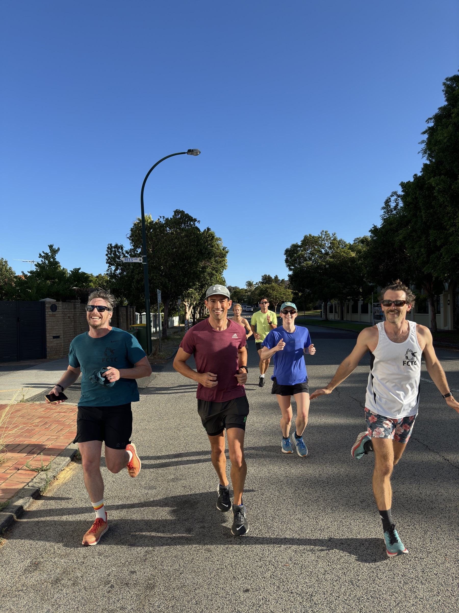
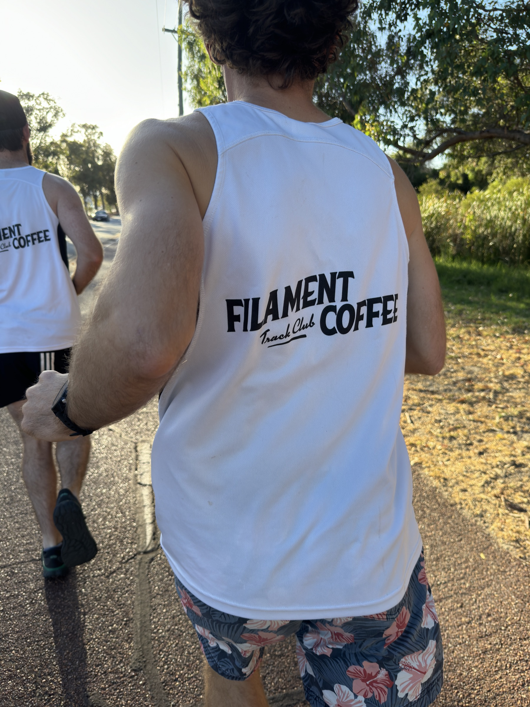
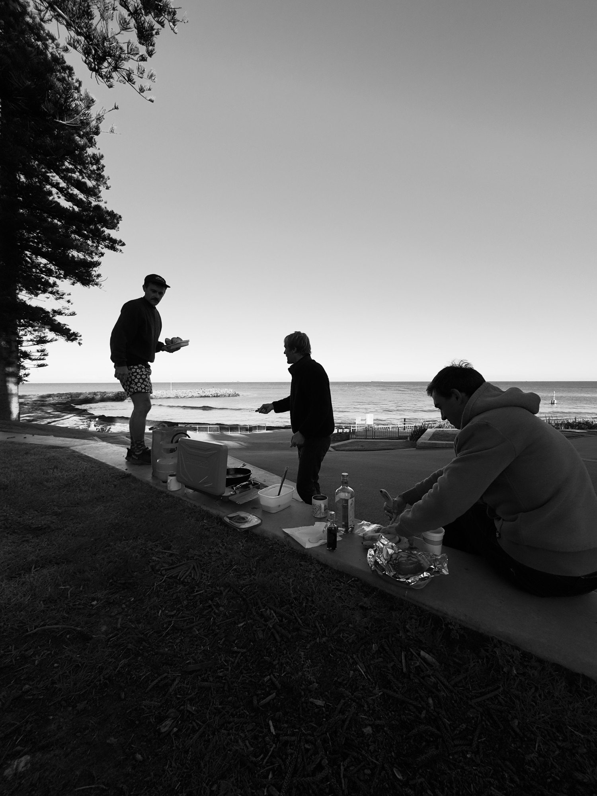

Wed
0530 · Herdsman LakeSomething for everyone. Easy some weeks, intervals and tempo others — everything at your own pace, all welcome.
- 1stIntervals
- 2ndHerdy's + Monger 12km Cruise
- 3rdIntervals
- 4th8km Community Cruise
- 5thSurprise?



We warm up together. We drink coffee together. In between, run as fast, slow, or mental as you want.
★ Amen Scoundrels ★Balancing people's different fitness and social needs — we all run for different reasons, and everyone should get what they need out of our group sessions.
Something for everyone. Easy some weeks, intervals and tempo others — everything at your own pace, all welcome.
Beach during the summer, suburbs in the winter — and sometimes the CBD.
A marathon on Anzac Day, because a dawn service deserves a dawn effort.
The culmination of a year's training — capped off with the Christmas party and a White Elephant.
What better way to celebrate than a half marathon with a few beers along the way?
If it's your birthday, we run a half marathon in your honor.